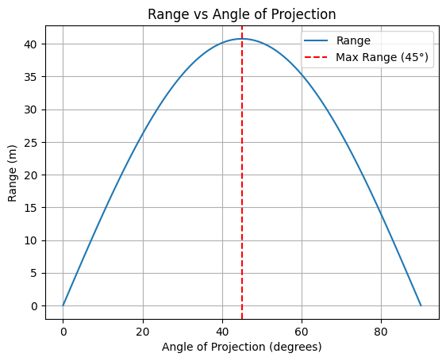

Problem 1
📌 Mechanics: Investigating the Range as a Function of the Angle of Projection
🏹 Motivation
Projectile motion appears simple, yet it encapsulates deep physical principles. By analyzing how the range of a projectile varies with its launch angle, we uncover fascinating relationships governed by linear and quadratic equations. These equations have broad applications, from sports (e.g., the trajectory of a soccer ball) to engineering (e.g., missile launch dynamics).
⚖ 1. Theoretical Foundation
📜 Equations of Motion
A projectile launched with an initial velocity \( v_0 \) at an angle \( \theta \) follows a parabolic trajectory under the influence of gravity. We derive its motion using Newton's laws.
🔹 Horizontal Motion
Since there is no acceleration in the horizontal direction (assuming no air resistance), the velocity remains constant:
🔹 Vertical Motion
The vertical motion is governed by constant acceleration due to gravity \( g \):
The projectile reaches the ground when \( y = 0 \), solving for \( t \):
This is the total time of flight.
📏 2. Analysis of the Range
The range \( R \) is the horizontal distance covered by the projectile when it lands:
Using the identity \( 2\sin\theta\cos\theta = \sin 2\theta \), we get:
📌 Key Observations:
-
Maximum Range:
The range is maximized when \( \sin 2\theta = 1 \), i.e., \( 2\theta = 90^\circ \) → \( \theta = 45^\circ \). -
Symmetry:
The function \( R(\theta) \) is symmetric around \( 45^\circ \), meaning \( R(\theta) = R(90^\circ - \theta) \). -
Effect of Initial Velocity:
Since \( R \propto v_0^2 \), doubling \( v_0 \) quadruples the range. -
Effect of Gravity:
Since \( R \propto \frac{1}{g} \), projectiles travel farther on planets with lower gravity (e.g., the Moon).
🌎 3. Practical Applications
- Sports:
- Soccer: Kicking a ball at \( 45^\circ \) for maximum distance.
-
Basketball: Analyzing the optimal shooting angle.
-
Engineering & Ballistics:
- Missile trajectories and range optimization.
-
Water fountains and fluid mechanics.
-
Astrophysics:
- Moon landings require adjusting launch angles based on gravity.
💻 4. Implementation (Python Simulation)
Below is a Python script to simulate the projectile range as a function of \( \theta \):
python import numpy as np import matplotlib.pyplot as plt
Constants
v0 = 20 # Initial velocity (m/s) g = 9.81 # Gravity (m/s²)
Angles from 0 to 90 degrees
theta = np.linspace(0, 90, 100) theta_rad = np.radians(theta) # Convert to radians
Compute range for each angle
R = (v0**2 / g) * np.sin(2 * theta_rad)
Plot results
plt.figure(figsize=(8, 5)) plt.plot(theta, R, label=r'Range \(R = \frac{v_0^2}{g} \sin 2\theta\)', color='b') plt.axvline(45, linestyle="--", color="r", label=r'Maximum at \(\theta = 45^\circ\)') plt.xlabel("Launch Angle (degrees)") plt.ylabel("Range (m)") plt.title("Projectile Range vs. Launch Angle") plt.legend() plt.grid() plt.show()

📊 5. Results and Discussion
🔹 Graph Interpretation
- The maximum range occurs at \( \theta = 45^\circ \).
- The function is symmetric about \( 45^\circ \).
- Higher \( v_0 \) increases range quadratically.
🔹 Limitations of the Model
- Assumes no air resistance.
- Assumes flat terrain (ignores hills, obstacles).
- Ignores wind effects, which can alter trajectories.
🔹 Enhancements
- Add air drag to create more realistic simulations.
- Consider launches from elevated platforms (e.g., artillery firing from a hill).
🎯 Conclusion
This study shows how the range of a projectile depends on launch angle, initial velocity, and gravity. The ideal case follows the classic \( R = \frac{v_0^2}{g} \sin 2\theta \) relation, peaking at \( 45^\circ \). However, real-world factors like air resistance modify this behavior, making computational modeling essential for accurate predictions.